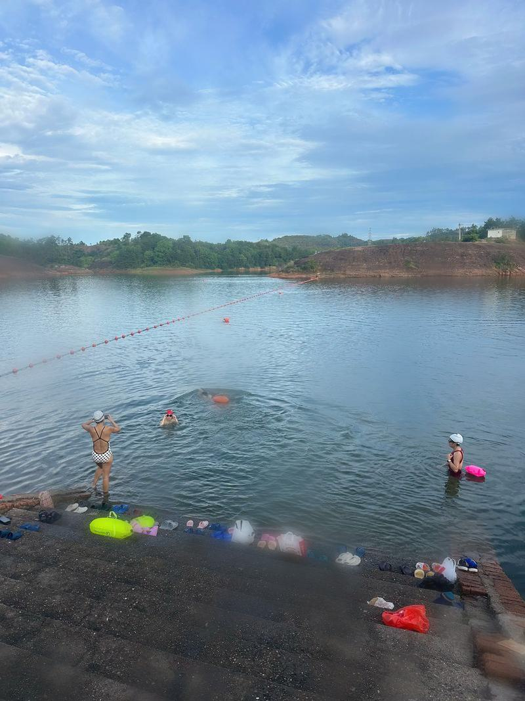

Abstract
Water sports safety can be enhanced by video-based monitoring that enables timely assistance based on participants’ states. However, in outdoor aquatic environments, droplets on camera lenses cause false and missed detections in YOLO-based systems. In addition, multiple camera streaming makes center-based processing costly in both real time computation and communication. To address these issues, this letter presents a real-time FPGA-based safety monitoring system for water sports. First, a lightweight diffusion-based method is proposed to remove droplets from camera lenses, reducing false detections and missed alarms. Then, an overlay hardware architecture is design to support the processing of different backbone models. The system is implemented on a ZCU102 FPGA to enable on-device real time droplet removal and human states detection. Experimental results show that the proposed recognition model improves mAP@50 and AP by 16.5% and 18.4%, respectively. In addition, the FPGA implementation achieves 44.77 FPS, compared to the edge GPU, the proposed system achieves a 1.72× improvement in performance and a 2.74× improvement in energy efficiency.
Visual Effects
Demonstrations


BibTeX
@article{fan2026fpga,
author={Fan, Xue and Xu, Katherine and Jiang, Wei and Zhang, Song and Bai, Yueyin},
journal={IEEE Embedded Systems Letters},
title={FPGA-Based Real-Time Safety Monitoring System for Water Sports with Diffusion-Based Droplet Removal},
year={2026},
volume={},
number={},
pages={1-1},
keywords={Field programmable gate arrays;Central Processing Unit;Adders;Integrated circuits;Circuits;Application specific integrated circuits;Electronic circuits;Videos;Electronic mail;Video equipment;Real-time computing;safety monitoring system;FPGA-based acceleration;diffusion model;SW/HW co-design},
doi={10.1109/LES.2026.3690742}
}